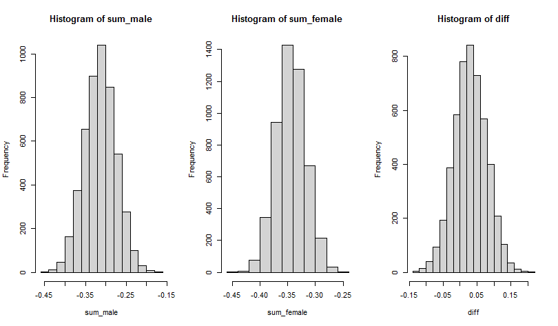
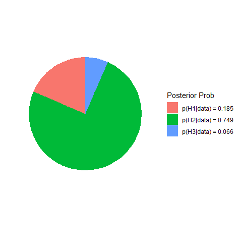

Three Ways to Test the Same Hypothesis
Donny Williams
5/23/2020
Source:vignettes/hyp_3_ways.Rmd
hyp_3_ways.RmdIntroduction
On a Facebook methods group, there was a question about testing hypotheses in networks. In the comments, it was suggested that BGGM could be used to test the hypothesis. And it turns out that BGGM really shines for testing expectations (see for example Rodriguez et al. 2020).
In this vignette, I demonstrate three ways to go about testing the same hypothesis, which is essentially testing for a difference in the sum of partial correlations between groups.
R package
# need the developmental version
if (!requireNamespace("remotes")) {
install.packages("remotes")
}
# install from github
remotes::install_github("donaldRwilliams/BGGM")
library(BGGM)Approach 1: Posterior Difference
The first approach is rather straightforward, with the caveat that the method needs to be implemented by the user. Note that I could certainly implement this in BGGM, assuming there is enough interest. Please make a feature request here.
Hypothesis
The hypothesis was that a sum of relations was larger in one group, for example,
Note that the hypothesis is related to the sum of relations, which is readily tested in BGGM.
Fit Models
The first step is to estimate the model for each group
# fit female
fit_female <- estimate(Y_females, seed = 2)
# fit males
fit_male <- estimate(Y_males, seed = 1)For an example, I used the default which is to assume the data is
Gaussian. This can be changed with type = either
binary, ordinal, or mixed.
Extract the Samples
The next step is to extract the posterior samples for each relation
post_male <- posterior_samples(fit_male)[,c("A1--A2", "A1--A3")]
post_female <- posterior_samples(fit_female)[,c("A1--A2", "A1--A3")]Note that the column names reflect the upper-triangular elements of
the partial correlation matrix. Hence, the first name
(e.g.,A1) must be located before the second name (e.g.,
A2) in the data matrix. This can be understood in reference
to the column numbers: 1--2 is correct whereas
2--1 will result in an error.
Sum and Compute Difference
The next step is to sum the relations and compute the difference
# sum males
sum_male <- rowSums(post_male)
# sum females
sum_female <- rowSums(post_female)
# difference
diff <- sum_male - sum_femalewhich can then be plotted
# three column
par(mfrow=c(1,3))
# male sum
hist(sum_male)
# female sum
hist(sum_female)
# difference
hist(diff)
Approach 2: Predictive Check
The next approach is based on a posterior predictive check. The hypothesis is essentially the same as above, but for the predictive distribution, that is,
where the only difference is . See more details here.
Define Function
The first step is to define a function to compute the difference in sums
# colnames
cn <- colnames(Y_males)
# function
f <- function(Yg1, Yg2){
# data
Yg1 <- na.omit(Yg1)
Yg2 <- na.omit(Yg2)
# estimate partials
fit1 <- pcor_mat(estimate(Yg1, analytic = TRUE))
fit2 <- pcor_mat(estimate(Yg2, analytic = TRUE))
# names (not needed)
colnames(fit1) <- cn
rownames(fit1) <- cn
colnames(fit2) <- cn
rownames(fit2) <- cn
# take sum
sum1 <- fit1["A1", "A2"] + fit1["A1", "A3"]
sum2 <- fit2["A1", "A2"] + fit2["A1", "A3"]
# difference
sum1 - sum2
}Note that the function takes two data matrices and then returns a single value. Also, the default in BGGM does not require a custom function (only needs the data from each group).
Predictive Check
The next step is to compute the observed difference and then perform the check.
# observed
obs <- f(Y_males, Y_females)
# check
ppc <- ggm_compare_ppc(Y_males, Y_females,
iter = 250,
FUN = f,
custom_obs = obs)
# print
ppc
#> BGGM: Bayesian Gaussian Graphical Models
#> ---
#> Test: Global Predictive Check
#> Posterior Samples: 250
#> Group 1: 896
#> Group 2: 1813
#> Nodes: 5
#> Relations: 10
#> ---
#> Call:
#> ggm_compare_ppc(Y_males, Y_females, iter = 250, FUN = f, custom_obs = obs)
#> ---
#> Custom:
#>
#> contrast custom.obs p.value
#> Yg1 vs Yg2 0.029 0.264
#> --- Note this requires the user to determine .

Approach 3: Bayesian Hypothesis Testing
The above approaches cannot provide evidence that the sum is equal. In other words, just because there was not a difference, this does not provide evidence for equality. The Bayes factor methods allow for formally assessing the equality model, that is,
where is the complement and can be understood as neither the first or second hypothesis.
Test Hypothesis
The hypothesis is easily translated to R code
hyp <- c("g1_A1--A2 + g1_A1--A3 > g2_A1--A2 + g2_A1--A3;
g1_A1--A2 + g1_A1--A3 = g2_A1--A2 + g2_A1--A3")Note the g1 indicates the group and ;
separates the hypotheses. I again assume the data is Gaussian (although
this can be changed to type = "ordinal" or
type = "mixed"; see here)
test <- ggm_compare_confirm(Y_males, Y_females,
hypothesis = hyp)
# print
test
#> BGGM: Bayesian Gaussian Graphical Models
#> Type: continuous
#> ---
#> Posterior Samples: 25000
#> Group 1: 896
#> Group 2: 1813
#> Variables (p): 5
#> Relations: 10
#> Delta: 15
#> ---
#> Call:
#> ggm_compare_confirm(Y_males, Y_females, hypothesis = hyp)
#> ---
#> Hypotheses:
#>
#> H1: g1_A1--A2+g1_A1--A3>g2_A1--A2+g2_A1--A3
#> H2: g1_A1--A2+g1_A1--A3=g2_A1--A2+g2_A1--A3
#> H3: complement
#> ---
#> Posterior prob:
#>
#> p(H1|data) = 0.13
#> p(H2|data) = 0.825
#> p(H3|data) = 0.046
#> ---
#> Bayes factor matrix:
#> H1 H2 H3
#> H1 1.000 0.158 2.853
#> H2 6.349 1.000 18.113
#> H3 0.351 0.055 1.000
#> ---
#> note: equal hypothesis prior probabilitiesNote the posterior hypothesis probability for the equality model is 0.825. The Bayes factor matrix then divides those values, for example, indicates the data were about 6 times more likely under than .
Plot Hypothesis
The hypothesis can be plotted
plot(test)
Sensitivity Analysis
It is also important to check the robustness. Here the width of the prior distribution is decreased
test <- ggm_compare_confirm(Y_males, Y_females,
hypothesis = hyp,
prior_sd = 0.15)
# print
test$out_hyp_prob
#> 0.18523406 0.74906147 0.06570447which results in a probability of 0.75 for ().
Conclusion
Three approaches for testing the same hypothesis were demonstrated in this vignette. This highlights that any hypothesis can be tested in BGGM and in several ways.